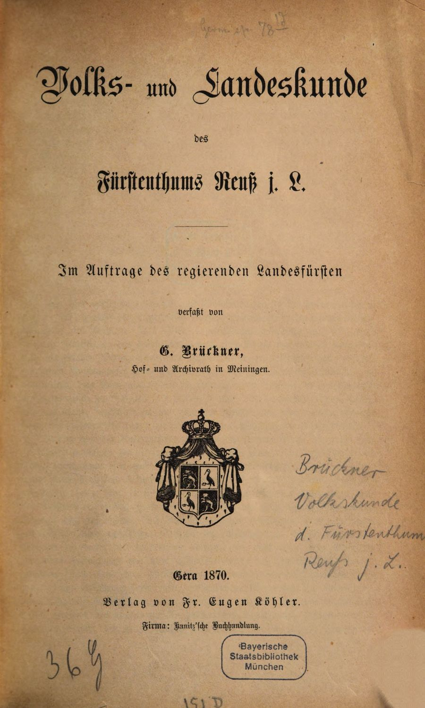

Volks- und Landeskunde des Fürstenthums Reuß j. L.
Gera: Fr. Eugen Köhler 1870
Digitale Edition, herausgegeben von Tobias Perschl, Markus Gerstmeier und Malte RehbeinDigital edition, edited by Tobias Perschl, Markus Gerstmeier and Malte Rehbein
Brückners Landeskunde beschreibt das thüringische Fürstentum Reuß jüngerer Linie um 1870 in ganzer Breite: Natur und Klima, Bevölkerung, Mundart und Brauchtum, Wirtschaft, Staat und Geschichte. Ihr zweiter Teil führt durch jeden einzelnen Ort zwischen Gera, Schleiz und Lobenstein. Die Edition gibt den Text mit dem Faksimile der Bayerischen Staatsbibliothek wieder und erschließt ihn durch Register, eine Karte und Auswertungen der statistischen Tabellen.Brückner’s regional study describes the Thuringian principality of Reuss (Younger Line) around 1870 in its full breadth: nature and climate, population, dialect and customs, economy, state and history. Its second part walks through every single place between Gera, Schleiz and Lobenstein. The edition presents the text alongside the facsimile of the Bavarian State Library and opens it up through indexes, a map and analyses of the statistical tables.

- InhaltContents
Die Gliederung des Werks nach Brückners Inhaltsübersicht, mit einer kurzen Übersicht zu jeder Seite.The structure of the work after Brückner’s table of contents, with a short summary of every page.
- RegisterIndexes
6.688 Orte, Personen, Institutionen, Gewässer und Berge, Tiere und Pflanzen sowie Sachen, jeweils mit Belegstellen und Normdaten.6,688 places, persons, institutions, rivers and mountains, animals and plants, and things, each with its passages and authority data.
- KarteMap
569 Orte und Naturräume des Werks; die 173 Orte mit eigenem Artikel im zweiten Teil sind hervorgehoben.569 places and natural features of the work; the 173 places with their own article in Part II are highlighted.
- AuswertungenAnalyses
Brückners Tabellen zu Klima, Bevölkerung, Wirtschaft und Geschichte als Diagramme, mit Quellen und Daten.Brückner’s tables on climate, population, economy and history as charts, with sources and data.
- VolltextsucheFull-text search
Findet historische wie moderne Schreibungen, also „Thal“ auch unter „Tal“, und versteht englische Suchbegriffe.Finds historical and modern spellings alike, so “Thal” also under “Tal”, and understands English search terms.
- Zur EditionAbout the edition
Einleitung, Editionsrichtlinien, Zitierweise, Daten und Downloads.Introduction, editorial principles, citation, data and downloads.